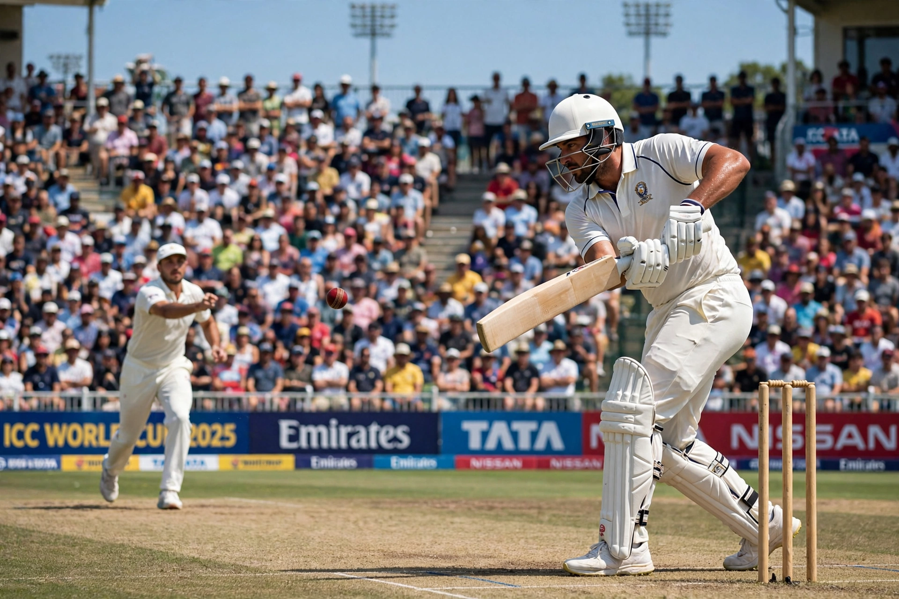

From Wikipedia, the free encyclopedia
| Cricket | |
|---|---|
 A batsman playing a shot as the bowler delivers the ball, in a packed stadium | |
| Highest governing body | International Cricket Council (ICC) |
| First played | 16th century, south-east England |
| Team members | 11 per side |
| Type | Team sport, bat-and-ball |
| Equipment | Ball, bat, wickets (stumps and bails), protective gear |
| Venue | Cricket field (oval), pitch 22 yards (20.12 m) |
| Olympic | 1900 only (returning 2028) |
Cricket is a bat-and-ball game that is played between two teams of eleven players on a field, at the centre of which is a 22-yard (20.12-metre) pitch with a wicket at each end, each comprising two bails balanced on three stumps. The two competing teams take turns batting — attempting to score runs — and fielding/bowling. When one team is batting, a player (the bowler) propels the ball towards the wicket with the aim of dismissing the opposing team's batsmen; the striker tries to hit the ball away and score runs. It is the world's second most popular spectator sport after association football, followed by an estimated 2.5 billion fans, concentrated in South Asia, Australasia and England.
The Laws of Cricket are maintained by Marylebone Cricket Club (MCC) in London. The sport is governed internationally by the International Cricket Council (ICC), whose full members contest Test matches. The game's early history is in south-east England in the mid-16th century; it spread globally with the expansion of the British Empire.
Twelve nations are ICC full members, including England, Australia, the India national cricket team, Pakistan, New Zealand, South Africa and the West Indies. The most celebrated players include Don Bradman, whose Test batting average of 99.94 is legendary, Sachin Tendulkar, Shane Warne, Muttiah Muralitharan, Brian Lara, Jacques Kallis and, in the modern era, Virat Kohli. The largest cricket stadium in the world is the Narendra Modi Stadium in Ahmedabad, India.
The first Women's Cricket World Cup was held in 1973, two years before the men's edition. Australia is the most successful team in the women's game.
Categories: Cricket | Team sports | Bat-and-ball games